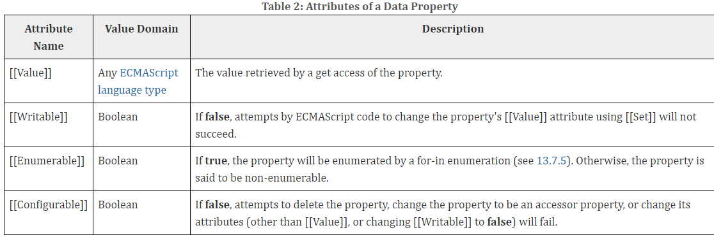
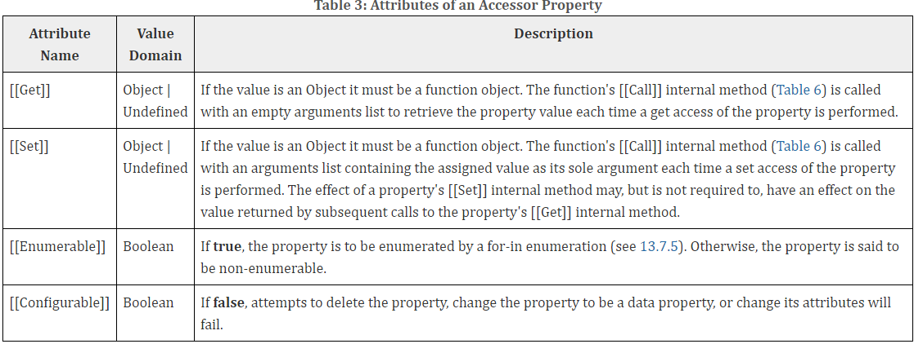
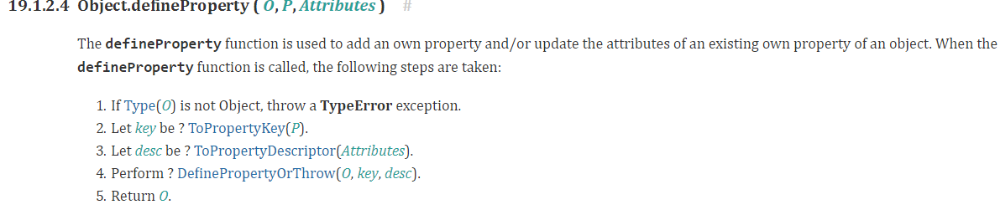
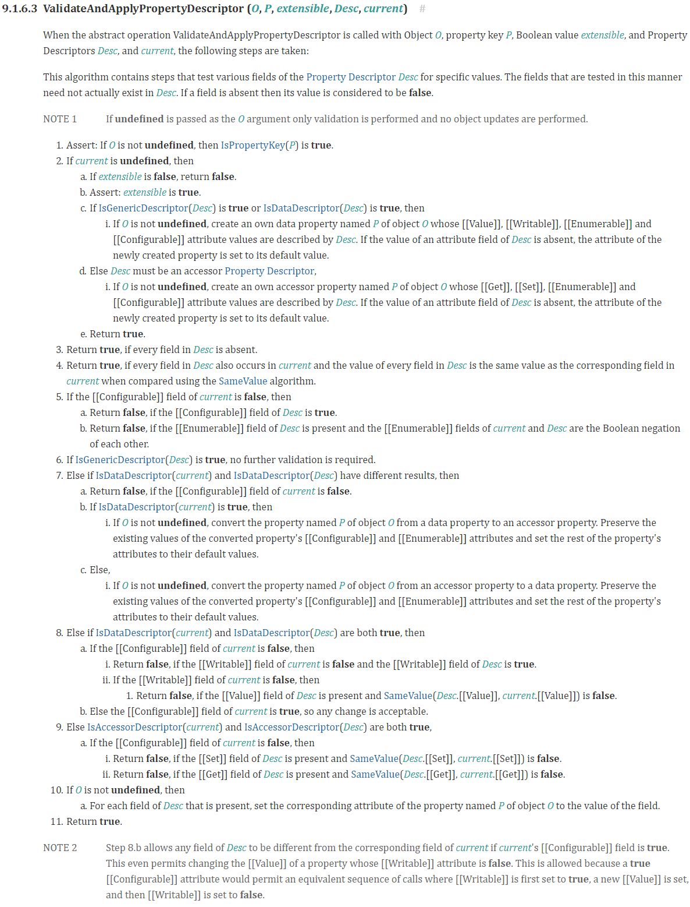
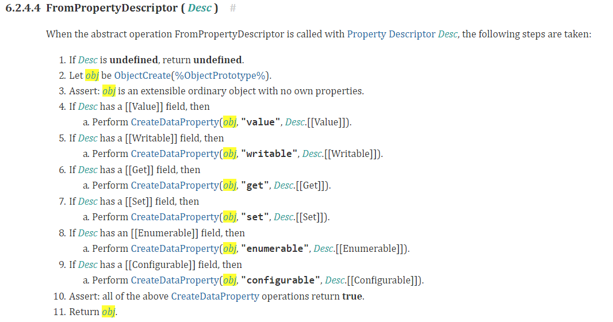
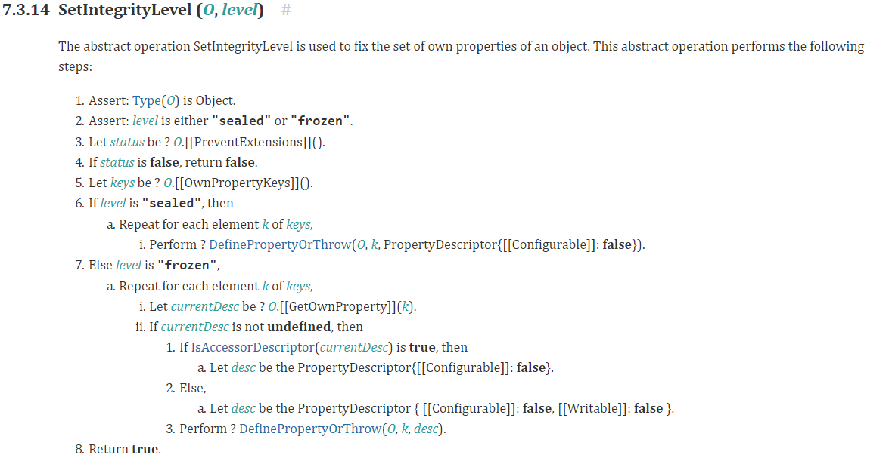

属性描述对象在ECMAScript5.1就已经成为标准了，但是IE9+才支持。属性描述对象在规范中是一个规范类型，也就是用来更好的描述规范的，其实也就是用来描述对象的属性的。大名鼎鼎的Vue.js正是使用的这个属性描述对象，实现的数据双向绑定，也正是因为如此，才不支持IE9以下浏览器。
属性描述对象
在规范中中的6.2.4就是讲属性描述对象的，属性描述对象的具体属性则在6.1.7.1中说明的。因为6.2是讲规范属性，6.1是讲ECMAScript语言，其中6.1.7又是专门讲对象的小节。
在规范中，对属性描述对象又做了进一步的分类，属性描述对象一般有两种比较常见，叫data Property Descriptors 和 accessor Property Descriptors。我这里就简单的翻译为数据属性描述对象，访问器属性描述对象。而他们的分类标准就是，只要有[[Value]] 或者 [[Writable]]属性其中一个或者两个，就算数据属性描述对象，只要有[[Get]] 或者 [[Set]]属性其中的一个或者两个，就算是访问器属性描述对象。但是一个属性描述对象不能既是数据描述符，同时也是访问器属性描述对象。如果两则都不是，就叫普通属性描述对象，这个分类很少见，其实就是为了分类的完整性，而弄出这个分类的。常见的都是数据属性描述对象和访问器属性描述对象，对象的属性的属性描述对象只能是这两种之一。
数据属性描述对象
属性描述对象一共可以有4个属性，如图所示：

- [[Value]]就是这个属性的值，默认undefined
- [[Writable]]，决定了这个属性的[[Set]]操作是否成功，默认false
- [[Enumerable]]，枚举决定了这个属性能否在for-in和Object.keys()中出现，默认false
- [[Configurable]]，可配置性，如果为false，那么除了把[[Writable]]改变为false和修改[[Value]]，其他操作，比如删除属性，把属性改成访问器属性等等都会报错。默认值是false。
访问器属性描述对象
访问器属性描述对象也是一共可以有4个属性，如图所示：

可以看出，它也有[[Enumerable]]和[[Configurable]]属性，然后还有两个访问器属性描述对象特有的属性：
- [[Set]]，默认值是undefined，其值只能是函数或者undefined，当set操作被调用时，是会以要赋值的那个值作为唯一参数调用函数的[[Call]]操作。一般情况下，这个操作应该都会对[[Get]]操作产生影响，但不是必须，可以和[[Get]]没有任何关系。
- [[Get]], 默认值是undefined其值只能是函数或者undefined，当get操作被调用时，是会以空参数的形式调用这个函数的[[Call]]操作。
属性描述对象相关操作
Object.defineProperty（O，P，Desc）
给一个对象添加属性或者修改属性一般有两种方式，一是直接使用赋值表达式，二就是使用Object.defineProperty。这个方法接受三个参数：O就是要改变的对象，P是要改变的属性，Desc就是要给这个属性定义的属性描述对象。Object.defineProperty执行的具体步骤在规范的19.1.2.4节，如下图所示：

继续追规范下去，会发现最终是执行如下所示操作：

这个函数的执行要判断很多种情况，总结如下：
- 如果属性之前的Desc为undefined，那就是直接更改为最新的Desc，相应类型的属性描述对象的缺省字段将被设为默认值。
- 如果属性之前的Desc和将要赋值的Desc一样，那么直接返回true。
- 如果新的Desc既不是
- 如果现在的Desc中的[[Configurable]]为false，那么除了把[[Writable]]有true改为false，或者是在[[Writable]]为true的情况下，修改[[Value]],剩余情况一律返回false
- 只要[[Configurable]]为true，任何操作都是允许的，就算[[Writable]]为false，也能修改[[Value]]
Object.defineProperties(O, P)
这个函数有两个参数，一个是对象O，另一个也是是一个对象，但是这个对象的key是要改变的属性名，value为这个属性的属性描述对象，实际操作就是根据key，不断的循环调用Object.defineProperty（O，key，value）
Object.getOwnPropertyDescriptor
在规范中，关键步骤如下所示：

也就是说，它会把规范类型属性描述对象，转换为一个语言类型对象，并且会把这个类型的属性描述对象的所有属性都返回。
Object.getOwnPropertyDescriptors
这个方法是在ECMAScript2017中定义的和defineProperties一样，具体实现肯定和getOwnPropertyDescriptor一样，这是是返回对象的全部属性的属性描述符。
Object.seal && Object.freeze
这两个函数在规范中最终都是调用的同一个内部操作，如下所示：

seal是执行SetIntegrityLevel(O, “sealed”)，freeze是执行SetIntegrityLevel(O, “frozen”)。从以上可以看出这两个函数的区别：
- seal只是封印的意思，只是把[[Configurable]]设置false
- freeze是冰封的意思，会同时把[[Configurable]]和[[Writable]]设为false。也就是说这个属性将不能再发生任何改变。
###